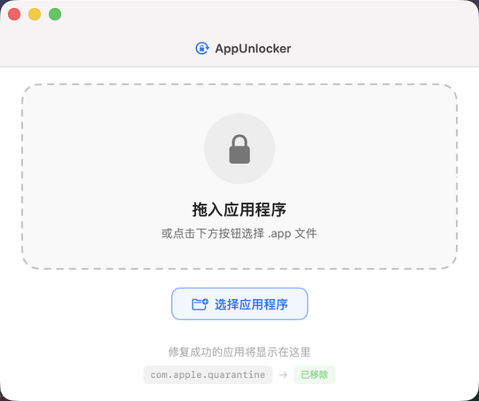
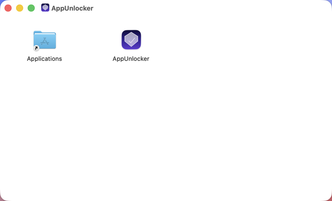

优雅移除 macOS 应用的隔离属性
Remove macOS quarantine attributes with ease
再也不用面对「已损坏，无法打开，你应该将它移到废纸篓」的困扰。
拖拽即可修复，一键移除 com.apple.quarantine 隔离标记。
Never see "is damaged and can't be opened" again.
Drag & drop any .app to instantly remove the com.apple.quarantine flag.

当 macOS 从互联网下载应用时，系统会自动设置 com.apple.quarantine 扩展属性。Gatekeeper 检测到该属性后，会阻止应用运行并显示这条令人困惑的错误信息。
When you download an app from the internet, macOS stamps it with the com.apple.quarantine extended attribute. Gatekeeper reads this flag and blocks the app from running, showing this confusing error dialog.
AppUnlocker 移除了 quarantine 属性，让应用恢复运行。无需打开终端、无需记忆命令、无需面对 Gatekeeper 的阻拦。拖拽即可完成修复。
AppUnlocker strips the quarantine attribute so your app runs normally. No terminal commands, no arcane incantations — just drag, drop, and done.
直接将 .app 文件拖入应用窗口，自动开始修复。
Drop any .app bundle onto the window to begin.
先尝试普通权限移除，失败后自动请求管理员授权。
Attempts direct removal first; escalates to admin if needed.
通过原生 NSOpenPanel 浏览和选择应用。
Browse and select apps via the native file picker.
查看已修复的应用列表，支持重试和直接打开。
View your fix history with retry & launch support.
基于 SwiftUI + AppKit，与 macOS 设计语言完美融合。
Built with SwiftUI & AppKit — feels right at home on Mac.
完全离线运行，不上传任何数据，纯本地操作。
Fully offline. No data collected. Everything stays on your machine.
将无法打开的 .app 文件拖入 AppUnlocker 窗口。
Drag the .app that won't open onto the window.
→AppUnlocker 自动移除 quarantine 属性，必要时请求管理员密码。
AppUnlocker strips the quarantine flag, asking for admin credentials if necessary.
→修复成功后点击「打开」按钮，应用即可正常运行。
Hit "Open" and launch your app — no more Gatekeeper warnings.

AppUnlocker.dmg — 打开后将应用拖入 Applications 文件夹
AppUnlocker.dmg — drag the app into your Applications folder
AppUnlocker 封装了 xattr 命令的调用，分两步完成隔离属性移除：
AppUnlocker wraps the xattr command and removes the quarantine flag in two steps:
// 1. Try direct removal (works if user owns the app) /usr/bin/xattr -r -d com.apple.quarantine /Applications/Example.app // 2. Escalate via osascript (prompts for admin password) osascript -e 'do shell script "xattr -r -d com.apple.quarantine /Applications/Example.app" with administrator privileges'
基于 SwiftUI + AppKit 构建，采用 MVVM 设计模式。后台操作在 Task.detached 中执行，确保 UI 保持响应。
Built with SwiftUI + AppKit following the MVVM pattern. Heavy operations run in Task.detached to keep the UI responsive.
AppUnlocker/ ├── AppUnlockerApp.swift // @main entry ├── ContentView.swift // Root view ├── AppUnlockerViewModel.swift // Business logic ├── AppItem.swift // Data model ├── DropZoneView.swift // Drag & drop ├── HistoryRowView.swift // History card ├── Assets.xcassets/ // App icon ├── Info.plist // Metadata └── AppUnlocker.entitlements // Entitlements
免费开源，下载即用。
Free and open source. Download and use immediately.
macOS 13.0+ · Apple Silicon & Intel macOS 13.0+ · Apple Silicon & Intel